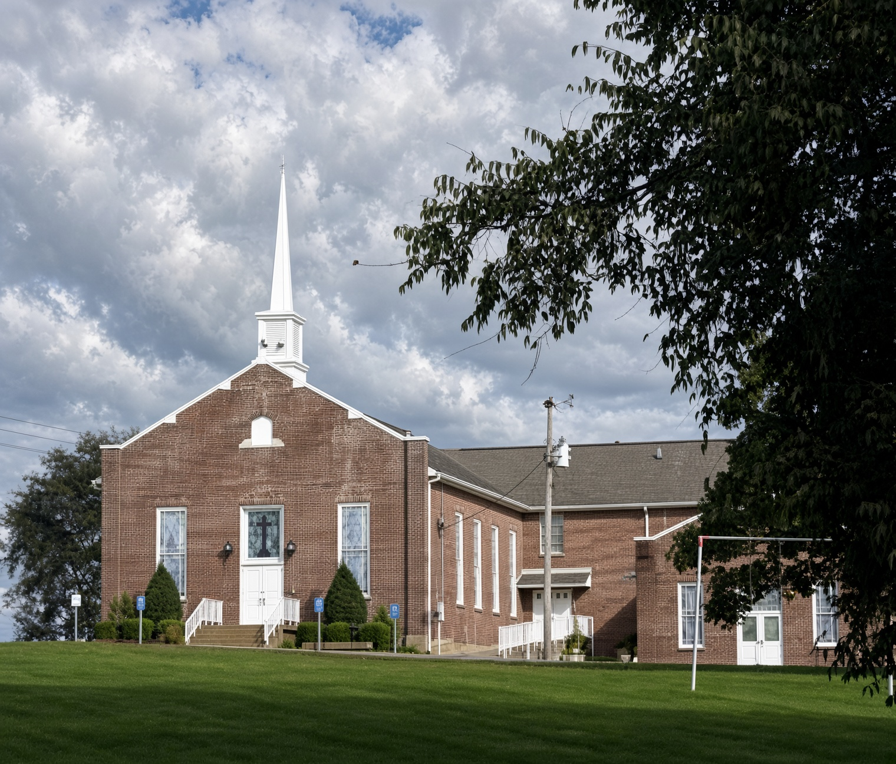

Kids
Little ones are welcome in the service. During the sermon there is also a simple class in the kids room. You may stay with your child. You may also walk them over and sit nearby. We will never make a scene of a new family.
Ministries
We keep this list short on purpose. Most of the real work is meals, rides, and showing up. If you want to help, or you need help, write us. We will not put you on a stage.
Little ones are welcome in the service. During the sermon there is also a simple class in the kids room. You may stay with your child. You may also walk them over and sit nearby. We will never make a scene of a new family.

Middle and high school students sit with us on Sunday. A few adults host a table after church once or twice a month — food, honest talk, and no pressure to perform.

Most of our life together happens in living rooms and on porches. If you want a group, ask Anita or James. We will not sign you up for a program. We will introduce you to a few people.

We take meals to folks who are sick, help with yard work, and keep an eye on older neighbors. If you have a need, tell us. If you have time, we can use it. Either way is enough.

Anyone may ask for prayer. Write a note, send an email, or stay a minute after church. We pray in the sanctuary on Wednesday evenings at 6:30 when we can. Come if you like. Stay home if you need to.
Questions about any of this? Write to us.